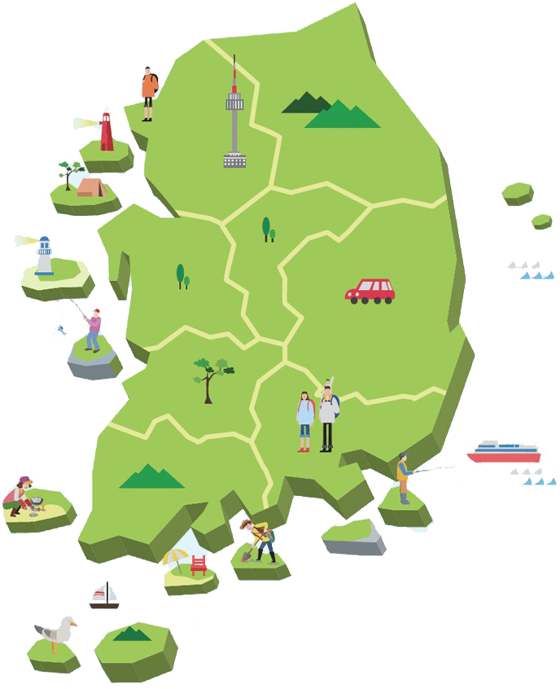

무인도서 이용방법
무인도서를 함께 즐기기 위한 이용방법을 안내합니다.

무인도서에 관한 정보 수집

여행을 하려면 제대로 알아야 하는 법
해양수산부 무인도서 종합정보제공 사이트를 활용하면 전국 무인도서에 관해 더 많은 정보를 얻을 수 있다.
해양수산부 무인도서
‘지도로 보는 무인도서’
이용 방법
‘지도로 보는 무인도서’
이용 방법

01 무인도서 정의
해양수산부 무인도서 종합정보제공 사이트 접속
(http://uii.mof.go.kr)하여 ‘지도로 보는 무인도서’ 클릭
(http://uii.mof.go.kr)하여 ‘지도로 보는 무인도서’ 클릭

02 필터링
무인도서의 무인도서 관리유형, 주변해역 관리유형,
소유구분, 무인도서 면적을 기준으로 필터링
소유구분, 무인도서 면적을 기준으로 필터링

03 정보 확인
관심있는 무인도서를 클릭해 무인도서의 위치, 관리정보,
시청각 자료 확인하기
시청각 자료 확인하기
무인도서 금지행위 위반시,
벌칙 및 과태료 안내
벌칙 및 과태료 안내
| 행위제한 (법 제12조제1항) |
벌칙 및 과태료 | 절대보전 (법 제12조) |
준보전 (법 제12조의2) |
이용가능 (법 제12조의3) |
개발가능 (법 제16조) |
|---|---|---|---|---|---|
| 건축물·인공구조물 신축, 증·개축 (제1호) |
[절대보전, 준보전] 3년 이하 징역 또는 5천만원 이하 벌금 (법 제34조제1항) [이용가능] 3년 이하 징역 또는 3천만원 이하 벌금 (법 제34조제2항) |
금지 |
<해수부장관허가> 대피소, 선착장, 그밖에 공공시설물 설치 등 허용 |
<해수부장관허가> 대피소, 선착장, 그밖에 공공시설물 설치 등 허용 소유자 등의 소규모 시설물 설치 등 허용 |
개발사업계획 승인 후 개발가능 |
| 토지 형질변경 (제2호) | 금지 | 금지 | 금지 | ||
| 개간·매립·준설·간척 (제3호) |
금지 | 금지 | 금지 | ||
| 토석채취, 광물채굴, 지하수개발 (제4호) |
금지 | 금지 | 금지 | ||
| 입목·대나무의 벌채·훼손 (제5호) |
[절대보전, 준보전] 1년 이하 징역 또는 2천만원 이하 벌금 (법 제35조제1항) |
금지 | 금지 | 금지 | 특별한 행위제한 없음 |
| 가축의 사육과 방목 (제6호) |
금지 | 금지 | 사육만 허용 | ||
| 야생생물 반입 (제6호의2) |
금지 | 금지 | 금지 | ||
| 무인도서내 서식 등·식물 포획·채취 등 (제7호) |
금지 | 금지 | 낚시, 맨손 채취 허용 | ||
| 자연적 생성물 반출 (제8호) |
금지 | 금지 | 금지 | ||
| 자연적 생성물의 형상 훼손 (제11호) |
금지 | 금지 | 금지 | ||
| 생활폐기물 투기 (제9호) |
1년 이하 징역 또는 1천만원 이하 벌금 (법 제35조제2항) |
금지 | 금지 | 금지 | |
| 취사, 야영 (제10호) | 50만원 과태료 | 금지 | 금지 | 허용 |
* 출입제한: (법 제13조) 절대보전무인도서에서는 출입 금지(주변지역 주민의 생계수단 출입은 예외),
(법 제14조) 준보전무인도서에서는 자연환경·생태계 보호를 위한 긴급조치 필요 기간 외 출입 가능
(법 제14조) 준보전무인도서에서는 자연환경·생태계 보호를 위한 긴급조치 필요 기간 외 출입 가능
무인도서, 여행 10


이용가능
개발불가